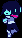

Quirky but compliant QOTDs; or, a really slow QOTD server
QOTD (RFC 865) is one of the early, trivially simple Internet protocols. Either on TCP or UDP, whenever it establishes a connection / receives a datagram, the server simply sends out a “short message” (and doesn’t do anything with the data the client sends).
The only thing it says about the syntax of the message is this:
There is no specific syntax for the quote. It is recommended that it be limited to the ASCII printing characters, space, carriage return, and line feed. The quote may be just one or up to several lines, but it should be less than 512 characters.
(Note that this well predates the formal RFC “SHOULD/RECOMMENDED” keywords, but I’ll take them like that anyway. Also, I’ll try to respect the 512 byte rule but not the ASCII rule, because that’s the most fun option.)
Naturally, with specifications like this, most people implementing a QOTD server would just send plaintext, but I wanted to take it a bit farther. What’s the most graphically interesting thing we can put in a valid QOTD?
What can we assume about the client?
Nothing, obviously. However, to be realistic(ally optimistic), I’ll assume that everyone is viewing QOTDs in a reasonably behaved terminal emulator. Where do we go from there?
Sixel graphics
Naturally, the first thing I tried was sixel graphics. Sixel is a terribly inefficient image format, but regardless, we can fit nontrivial images in it if we be conservative with how many colors we use and pick images that run‐length encode well.

DELTARUNE followed by this sprite of Kris, in 512 bytes total.
Raw bytes: ftp://dreamstation.systems/qotdArchive/20260620
It’s not stunning, but it’s something.
ANSI escape codes
Okay, maybe this should have been the natural first thing to try. However, we can’t actually do very much with just firehosed escape codes; we can make fancy looking text, we can blink text, but we can’t animate: everything happens all at once. We can repaint or move stuff across the screen, but realistically, the user will only ever see the end state. I largely ruled this out at first.
What levers do we have?
Not much. We can’t run any kind of custom program on the client. All we’re doing is sending a few hundred bytes at them, for them to use however we want.
There’s only one lever here: the sending itself. The spec just says we send <512 bytes and that’s it, but there’s no reason we just can’t happen to have a really slow, jittery connection full of tinygrams:
wc -c output showing 473.
Hell yeah, this really worked! I hacked together a Perl script that TCP_NODELAYs out my quote in arbitrarily small chunks, allowing for effects like this. (And this isn’t the best exercise of this, but now that we can slow down output, we can actually have animation!)
By default, TCP on Linux has Nagle’s algorithm enabled, which is a kernel feature that coalesces small writes into one segment to lower network overhead. That’s reasonable for most applications, but we don’t want it here, since we want fine control over when the segments get sent. So the first thing we do is call setsockopt(IPPROTO_TCP, TCP_NODELAY, 1), which says “disable Nagle; send my tinygrams immediately”.
The .sqotd DSL
To make animation scripts easy to write, I invented a tiny line‐oriented DSL. A .sqotd file is mostly text, with a few inline directives:
[type N]— delays each character by N seconds; applies to all single characters and persists until changed[wait N]— pauses N seconds[art NAME]...[end]— defines a named block anywhere in the file, not necessarily printed where it appears[spawn NAME]— prints the named block instantly[save]/[restore]— saves and restores cursor position instantly via escape codes[up N]/[down N]— moves the cursor instantly via escape codes[[— a literal[
I may add more if I ever decide to do more with this. Right now it’s basically just what’s needed for Still Alive:
[type 0.15]This was a triumph.[wait 1]
I'm making a note here:
HUGE SUCCESS.[wait 1]
It's hard to overstate
my satisfaction.[wait 1][type 0]
[spawn aperture][up 17][type 0.15]Aperture Science[type 0][down 17]
[art aperture]
#######
#### ####### ###
######### #### ####
####### ## #####
## ####
####### ## ###
##### # ####
#### # #####
### ### #######
#### ##
##### # #######
##### #### #########
### ####### ####
########
[end]
(Also archived at ftp://dreamstation.systems/qotdArchive/20260623.sqotd.)
The client sees the Still Alive output as 473 bytes total; remember, the delays aren’t part of the bytestream, it’s just a slow network.